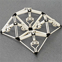

Voxelated Soft Matter via Multimaterial Multinozzle 3D Printing
M.A. Skylar-Scott*, J. Mueller*, C.W. Visser, and J.A. Lewis — Nature, Nature Publishing Group, 2019. [link]Transition waves in bistable 2D auxetic structures
L. Jin*, R. Khajehtourian*, J. Mueller*, A. Rafsanjani*, D. Kochmann, and K. Bertoldi — Proceedings of the National Academy of Sciences (PNAS), 2020. [link]Porous Polymer Architectures with Tunable Properties via Direct Bubble Writing
C.W. Visser, D. Amato, J. Mueller, and J.A. Lewis — Advanced Materials, Wiley, 2019. [link]Energy Absorption Properties of Periodic and Stochastic 3D Lattice Materials
J. Mueller, K. Matlack, K. Shea, and C. Daraio — Advanced Theory and Simulation, Wiley, 2019. [link]Tensile Strength of Interfaces in Multi-Material 3D-printed Parts
T. Lumpe, J. Mueller and K. Shea — Materials \& Design, Elsevier, 2019. [link]Stepwise Graded Struts for Maximizing Energy Absorption
J. Mueller and K. Shea — Extreme Mechanics Letters, Elsevier, 2018. [link]Stiffness-Independent Toughening of Beams through Coaxial Interfaces
J. Mueller, J.R. Raney, D.M. Kochmann, and K. Shea — Advanced Science, Wiley, 2018. [link]Buckling, Build orientation, and Scaling Effects in 3D Printed Lattices
J. Mueller, J. Schwarz, and K. Shea — Materials Today Communications, Elsevier, 2018. [link]Architected Lattices with High Stiffness and Toughness via Multicore-Shell 3D Printing
J. Mueller, J.R. Raney, K. Shea, and J.A. Lewis — Advanced Materials, Wiley, 2018. [link]Rotational 3D printing of damage-tolerant composites with programmable mechanics
J.R. Raney, B. Compton, J. Mueller, T. Ober, K. Shea, and J.A. Lewis — Proceedings of the National Academy of Sciences (PNAS), 2018. [link]Mechanical properties of interfaces in inkjet 3D printed single and multi-material parts
J. Mueller, D. Courty, M. Spielhofer, R. Spolenak, and K. Shea — 3D Printing and Additive Manufacturing, Libertpub, 2017. [link]The Effect of Anisotropy on the Optimization of Additively Manufactured Lattice Structures
T. Stankovic, J. Mueller, and K. Shea — Additive Manufacturing, Elsevier, 2017. [link]

Integrated Design and Simulation of Tunable, Multi-State Structures Fabricated Monolithically with Multi-Material 3D Printing
T. Chen, J. Mueller, and K. Shea — Scientific Reports, Nature Publishing Group, 2017. [link]Mechanical properties of parts fabricated with inkjet 3D printing through efficient experimental design
J. Mueller, K. Shea, and C. Daraio — Materials \& Design, Elsevier, 2015. [link]A Generalized Optimality Criteria Method for Optimization of Additively Manufactured Multi-Material Lattice Structures
T. Stankovic, J. Mueller, P. Egan, and K. Shea — Journal of Mechanical Design, Special issue on ''Design for Additive Manufacturing'', 2015. [link]